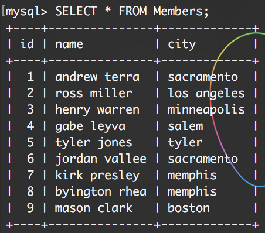

How might each app archetype utilize a recommendation algorithm?
Education:
Lets first start off by relating it to our own app, Grupr. Grupr will use a friend recommendation algorithm in order to suggest certain people that utilize the app that are similar to you. The similarities could be a whole range of things, from living in the same hometown, to working in the same group together.
For example, if Sammy and Sally worked in a group together, and Sammy and Johnny worked in a group together, the algorithm would realize there is a mutual friend, Sammy, that both Johnny and Sally have, thus adding each others names to the friend recommendation list.
Nutrition
Another question could be with how the nutrition group that is doing a recipe creation application could utilize a friend recommendation algorithm?
Good question, while they don’t necessarily have friends on their app, they could instead use the algorithm to relate certain ingredients together, and thus instead of the algorithm working on mutual friends, it would be deciding pairings based off mutual ingredients.
For example, say that someone utilizes carrots as a side dish in a recipe, then perhaps the next time they log in to find a new recipe, the recipe recommender could output the most commonly made recipe with carrots. Then possibly the person wouldn’t even have to put what ingredients they have because the first recipe they saw included ingredients they already had.
Fitness
How might a group fitness app utilize a friend finding algorithm? It would be fairly similar to the education friend recommender.
The example in our section would allow for friends to challenge their friends with certain workouts, as well as challenge other groups that they connect with. They could utilize this algorithm to find common connections between both groups and people, and thus they would be able to suggest a number of friends that are at a similar fitness level or in a similar group type.
Let us begin by creating a mini Facebook that we will use to demonstrate how a friend recommendation algorithm will work.
CREATE DATABASE facebook; (Use lowercase f!)
USE facebook;
Now we want to create a table of the members that are going to be utilizing our site
CREATE TABLE Members ( id INT NOT NULL AUTO_INCREMENT,
name VARCHAR(60),
city VARCHAR(60),
PRIMARY KEY (id)
);
Next we are going to input the people that will be utilizing our application
INSERT INTO Members (name, city) values ('andrew terra', 'sacramento');
INSERT INTO Members (name, city) values ('ross miller', 'los angeles');
INSERT INTO Members (name, city) values ('henry warren', 'minneapolis');
INSERT INTO Members (name, city) values ('gabe leyva', 'salem');
INSERT INTO Members (name, city) values ('tyler jones', 'tyler');
INSERT INTO Members (name, city) values ('jordan vallee', 'sacramento');
INSERT INTO Members (name, city) values ('kirk presley', 'memphis');
INSERT INTO Members (name, city) values ('byington rhea', 'memphis');
INSERT INTO Members (name, city) values ('mason clark', 'boston');
Now we need to create a table that will hold all of the friendships
CREATE TABLE Friends (
user VARCHAR(60),
friend VARCHAR(60)
);
Now we need to input our beginning friendships into said table
INSERT INTO Friends (user, friend) Values ('andrew terra', 'henry warren');
INSERT INTO Friends (user, friend) Values ('andrew terra', 'ross miller');
INSERT INTO Friends (user, friend) Values ('andrew terra', 'gabe leyva');
INSERT INTO Friends (user, friend) Values ('ross miller', 'tyler jones');
INSERT INTO Friends (user, friend) Values ('ross miller', 'jordan vallee');
INSERT INTO Friends (user, friend) Values ('henry warren', 'jordan vallee');
INSERT INTO Friends (user, friend) Values ('henry warren', 'kirk presley');
INSERT INTO Friends (user, friend) Values ('gabe leyva', 'byington rhea');
INSERT INTO Friends (user, friend) Values ('gabe leyva', 'jordan vallee');
INSERT INTO Friends (user, friend) Values ('tyler jones', 'mason clark');
INSERT INTO Friends (user, friend) Values ('jordan vallee', 'mason clark');
INSERT INTO Friends (user, friend) Values ('kirk presley', 'mason clark');
INSERT INTO Friends (user, friend) Values ('byington rhea', 'mason clark');
Let's make sure that we have the correct information in our tables, below you can see the SELECT * from the tables in the database, when you do these sql queries you should see similar results.
SELECT * FROM Members;

SELECT * FROM Friends;
Create a query to receive 3 columns
Now we have finished the basic schema of our “facebook” application, next we need to create a query that will give us 3 columns. Those columns will be friend1, friend2, and the number of friends they have in common. The initial query will look daunting, but we will go line-by-line to simplify said query.
SELECT
mems.name AS friend1,
friends_friends.friend AS friend2,
COUNT(*) AS friends_in_common
FROM
Members AS mems
INNER JOIN
Friends AS friends
ON friends.user = mems.name
INNER JOIN
Friends AS friends_friends
ON friends_friends.user = friends.friend
LEFT JOIN
Friends AS friends_with_user
ON friends_with_user.user = friends_friends.friend
AND friends_with_user.friend = mems.name
WHERE
friends_with_user.user IS NULL
GROUP BY
mems.name,
friends_friends.friend
ORDER BY
friends_in_common DESC
;
When you enter this command, you should get the following table:
Now, let's go through the query line-by-line to figure out what each part does.
SELECT
//This SELECT statement is going to be deciding what exactly we want
//to output to the screen
mems.name AS friend1,
friends_friends.friend AS friend2,
COUNT(*) AS friends_in_common
FROM
//this is where we are getting the information from
Members AS mems
INNER JOIN
//we want to join the Members table and the Friends table when the //user and the name are equal
Friends AS friends
ON friends.user = mems.name
INNER JOIN
//we also want to do an inner join of these table on a list of friends
//of friends, so this gets the list of friends of friends.
Friends AS friends_friends
ON friends_friends.user = friends.friend
LEFT JOIN
//left join returns all of the matching rows in the left table, with
//matching rows in the right table, and is null in the right table
//when there is no match.
Friends AS friends_with_user
ON friends_with_user.user = friends_friends.friend
AND friends_with_user.friend = mems.name
WHERE
//we want to check to make sure that the person isn't friends with the
//user and then it will be added to the count for that particular person
friends_with_user.user IS NULL
GROUP BY
//this group by is used in conjuction with the count function in order
//to group the result set by the mems.name column and the
//friends_friends.friend column.
mems.name,
friends_friends.friend
ORDER BY
//this is just going to order by the amount of friends each person has
//in common in a descending order
friends_in_common DESC
;
Now what we are going to do is create a php program that will output what we just outputted to the console using SQL, to our webpage. The php script can be found below.
//first we are going to connect to the database, make sure to replace
//the password to connect to your SQL
try
{
$dbc = new PDO('mysql:host=localhost;dbname=facebook', 'root', 'password');
}
catch (PDOException $e)
{
echo $e->getMessage()."
";
die();
}
//we are going to take the query and put it into a variable
$query = 'SELECT
mems.name AS friend1,
friends_friends.friend AS friend2,
COUNT(*) AS friends_in_common
FROM
Members AS mems
INNER JOIN
Friends AS friends
ON friends.user = mems.name
INNER JOIN
Friends AS friends_friends
ON friends_friends.user = friends.friend
LEFT JOIN
Friends AS friends_with_user
ON friends_with_user.user = friends_friends.friend
AND friends_with_user.friend = mems.name
WHERE
friends_with_user.user IS NULL
GROUP BY
mems.name,
friends_friends.friend
ORDER BY
friends_in_common DESC
';
//now we want to input the information to the page in a nicely //formatted fashion
echo '<table align="left"<br>
cellspacing="5" cellpadding="8"><br>
<tr><td align="center"><b>Friend 1</b></td>
<td align="center"><b>Friend 2</b></td>
<td align="center"><b>Friends in common</b></td></tr>';
//this is where we actually put the information into the html table
foreach( $dbc->query($query) as $row){
echo '<tr><td align="left">' .
$row['friend1'] . '</td><td align="center">' .
$row['friend2'] . '</td><td align="center">' .
$row['friends_in_common'] . '</td><td align="center">';
echo '</tr>';
}
echo '</table>';
// Close connection to the database
$dbc = null;
?>
Once you have saved that file we need to put it into the correct location, to find this location go to the folder in which your zero-to-slim.dev folder is, once there, you want to save this facebook.php file inside of the templates folder. In summary zero-to-slim.dev --> templates
Now we are going to need to locate and enter the src folder inside of your zero-to-slim.dev folder, once their we need to open routes.php to define the endpoint that will execute the php script we just created.
Once we have opened routes.php, we are going to paste the following code at the bottom.
$app->get('/facebook', function ($request, $response, $args) {
return $this->renderer->render($response, 'facebook.php', $args);
});
What this is doing is mapping the endpoint /facebook to execute the facebook.php script.
Now go to your favorite internet browser to test if we did this correctly. What you need to type into your URL is the following: http://zero-to-slim.dev/facebook If you did this correctly then you should see a webpage that is similar to the one in the screenshot below.
Congrats, now you have a working friend finding algorithm.